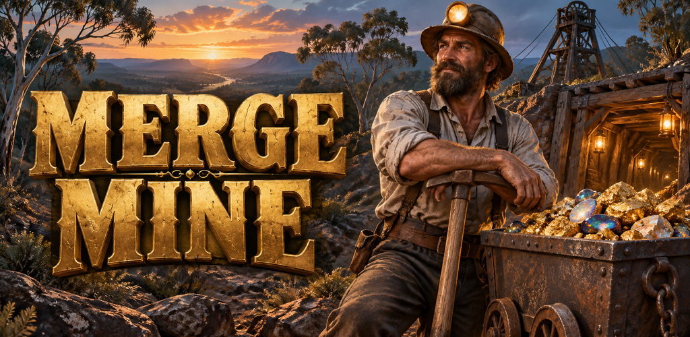
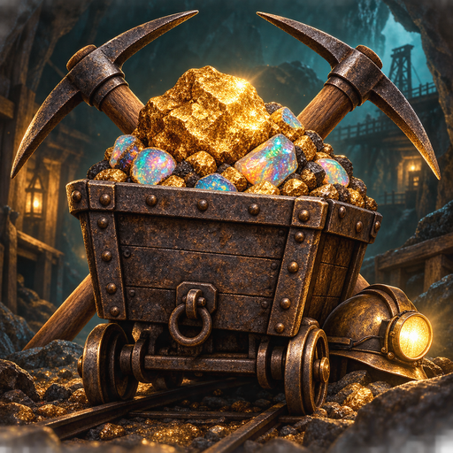
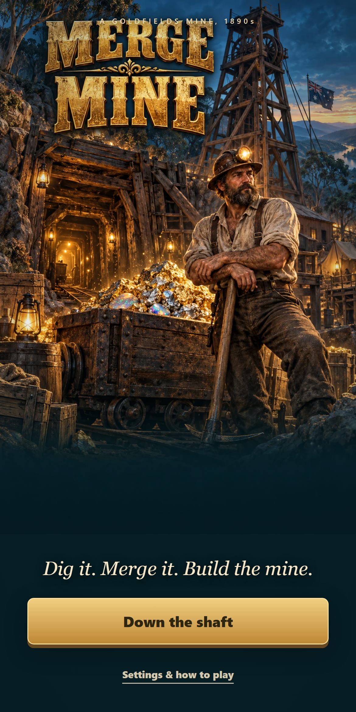
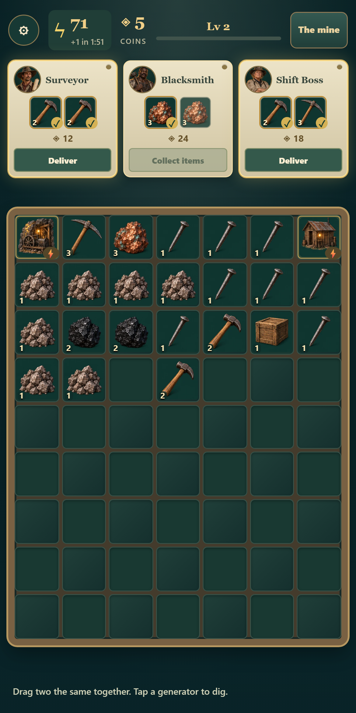
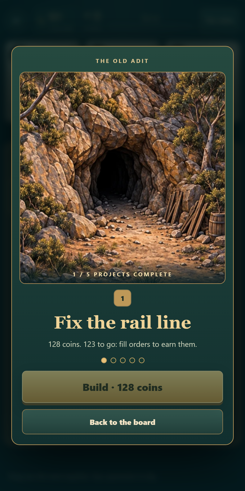
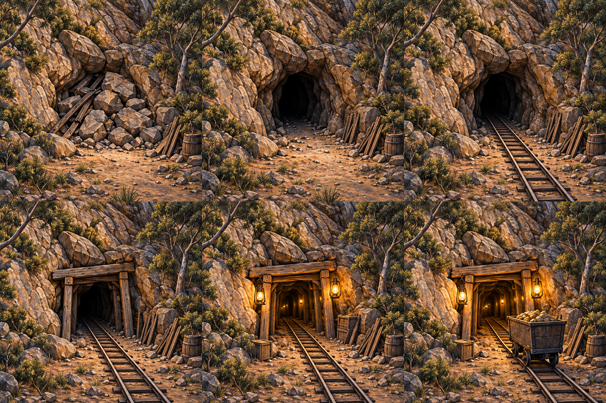

Play Merge Mine →Dig it. Merge it. Build the mine.
Original goldfields artwork, every inventory chain, six workers and thirty mine construction states.
Download the complete artwork pack

Actual gameplay
Fresh-game UI input, including an earned first construction. No injected resources or progression.



The mine grows
Construction artwork showing the adit's six stages. These are source illustrations, not gameplay screenshots.
